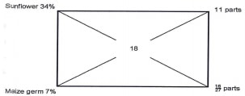
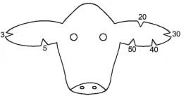

Answer all the questions in this section in the spaces provided.
6. State three advantages of conterriporary comparison method of selecting breeding stock.
(1½ marks)
8. State four livestock rearing practices undertaken in a crush to control parasites and diseases.
(2 marks)
(b) is fawn/brown coloured with white colour on the face, legs below knees and hocks, tail switch and flanks (½ mark)
(c) is most suitable for marginal areas with poor pastures. (½ mark)
13. Apart from the roof, name four other parts of a building that can be constructed using wood.
(2 marks)
14. State four symptoms of internal parasite infestation in livestock. (2 mark)
Answer all the questions in this section in the spaces provided.
17. The diagram below shows a livestock parasite.
(c) Explain two control measures for the parasite in a zero grazing unit.(2 mark)
18. The diagram below illustrates a tractor drawn implement.
H ................................................ .......................
(c) State one function of the part labelled K(1 mark)
(d) Explain why the implement is suitable for ploughing areas with hidden stones. (1 mark)
19. A farmer is required to prepare 200 kg of dairy meal containing 18% digestible crude protein (DCP).
Using the Pearson’s Square Method, calculate the quantity of sunflower seed cake (34% DCP) and maize germ (7% DCP) the farmer requires for the dairy meal. (5 marks)
20. The diagram below represents a practice of identifying livestock on a farm.
(b) Determine the number that identifies the animal represented by the illustration (1 mark)
(c) Draw a diagram of the animal identified by the number 148 on the farm. (1 mark)
(d) Give two reasons why this method of identification is discouraged in livestock rearing.
(2 marks)
Answer any two questions from this section in the spaces provided after question 23.
(d) Explain five factors that determine the amount of food eaten by a livestock animal.
(5 marks)
SECTION A (30 marks)
1. State six characteristics of a good breeding stock.(3 marks)
Young;
Healthy;
Prolific;
High performer/yielder;
Free from physical deformities;
Fertile;
Proper body conformation;
Adapted to local conditions;
Good mothering ability;
2. State four reasons for maintaining farm tools and equipment.(2 marks)
Ensure efficiency;
Make them durable;
Reduce replacement costs;
Avoid injury to the user;
3. State four reasons why a calf should be fed on colostrum.(2 marks)
Highly digestible;
Highly nutritious;
Contains antibodies which boost immunity; Has laxative effect;
Highly palatable;
4. Give two reasons for growing grass around a fish pond.(1 marks)
Stabilize the banks;
Attract insects which lay eggs that hatch into larvae for fish food;
5. Name four systems of poultry rearing. (2 marks)
Free range;
Deep litter;
Fold;
Battery cage;
6. State three advantages of conterriporary comparison method of selecting breeding stock.(1½ marks)
It is possible to compare animals of different age groups;
Eliminates differences due to environmental factors;
It is possible to compare bulls of different artificial insemination centres; It is accurate;
7. Give the meaning of the following terms as used in livestock breeding:
(a) close breeding (½ mark)
Close breeding:- Breeding of closely related animals;
(b) line breeding (½ mark)
Line breeding:- Mating of distantly related animals that share a common ancestry;
(c) out crossing (½ mark)
(c) Out crossing:- Mating of unrelated animals within the same breed;
(d) cross breeding (½ mark)
Cross breeding:- Mating of two animals of different breeds;
8. State four livestock rearing practices undertaken in a crush to control parasites and diseases.(2 marks)
Vaccination;
Deworming;
Hoof trimming;
Spraying;
Dehorning;
Treatment/injection;
9. Name the dairy cattle breed that
(a) produces the highest milk yield in kilograms (½ mark)
(a) - Friesian;
(b) is fawn/brown coloured with white colour on the face, legs below knees and hocks, tail switch and flanks (½ mark)
- Guernsey;
(c) is most suitable for marginal areas with poor pastures. (½ mark)
Jersey;
10. Distinguish between each of the following breeding practices:
(a) clutching and ringing (1 mark)
(a) Crutching:- Cutting of wool around the external reproductive organ of a female
sheep to facilitate mating while
Ringing:- Trimming of wool around the sheath of the penis in rams to facilitate mating;
(b) tupping and serving
(1 mark)
(b) Tapping:- Act of mating in goats and sheep;
Serving:- Act of mating in cattle and pigs;
11. What is a predisposing factor of a disease?(1 mark)
Conditions which lead to the animal contracting a disease
12. State four candling qualities of good eggs for incubation. (2 marks)
Fertile (has germinal disk; black spot);
Free from blood spots; Large air space;
Free of hair cracks;
Free of excessively porous shell; Free of broken shells;
13. Apart from the roof, name four other parts of a building that can be constructed using wood.
(2 marks)
Floor;
Ceiling;
Door;
Windows
14. State four symptoms of internal parasite infestation in livestock. (2 mark)
Starring coat;
Eggs and parasites seen in faeces;
General emaciation; Diarrhoea;
Pot-bellies; Anaemia; Anorexia;
Dehydration/pale mucosa
15. State the functional difference between the following:
(a) cross-cut saw and rip saw (1 mark)
Rip saw: - cuts along the grain of wood.
Cross-cut saw — cuts across the grain of wood;
(b) wood chisel and cold chisel
(1 marks)
Wood chisel — cutting grooves/chopping rough wood surface;
Cold chisel — cutting thick sheets of metal.
16. Give the meaning of the following terms as used in livestock health:
(a) predisposing factor (1 mark)
Conditions inside or outside the animal body which make it to contract a disease;
(b) incubation period (1 mark)
Is the duration between the time of infection and the time the first symptoms show up;
SECTION B (20 marks)
Answer all the questions in this section in the spaces provided.
17. The diagram below shows a livestock parasite.
(a) Identify the parasite.(1 mark)
Tapeworm
(b) Explain how the parasite is passed from
(i) livestock to human beings(1 mark)
Ingestion of bladder worm;
(ii) human beings to livestock(1 mark)
Ingestion of eggs (proglottids) passed in human faeces during grazing/feeding;
(c) Explain two control measures for the parasite in a zero grazing unit.(2 mark)
Use of antihelmintics/deworming to kill endo-parasites;
Proper hygiene in the unit;
Proper use of latrines to prevent contamination by infected faeces;
Proper cooking of meat to destroy bladder worms;
Use of clean feed, feeders, water and watchers to prevent contamination;
18. The diagram below illustrates a tractor drawn implement.
(a) Identify the implement (1 mark)
Disc plough
(b) Name the part labelled H and I(1 mark)
H - Beam;
I - Lower link attachment point;
(c) State one function of the part labelled K(1 mark)
Counteracts the thrust by the discs to balance the plough;/helps to adjust the depth of ploughing;
(d) Explain why the implement is suitable for ploughing areas with hidden stones. (1 mark)
The discs are able to roll over obstacles;
19. A farmer is required to prepare 200 kg of dairy meal containing 18% digestible crude protein (DCP).
Using the Pearson’s Square Method, calculate the quantity of sunflower seed cake (34% DCP) and maize germ (7% DCP) the farmer requires for the dairy meal. (5 marks)

Sunflower
11
27
x 200 = 81.48kg
Maize germ
16
27
x 200 = 118.52kg
20. The diagram below represents a practice of identifying livestock on a farm.
(a) ldentify the practice(1 mark)
Ear notching;
(b) Determine the number that identifies the animal represented by the illustration (1 mark)
155
(c) Draw a diagram of the animal identified by the number 148 on the farm. (1 mark)

(d) Give two reasons why this method of identification is discouraged in livestock rearing.
(2 marks)
The notching is painful to the animal;
Notched wounds cause secondary infections;
SECTION C (40 marks)
Answer any two questions from this section in the spaces provided after question 23.
21. (a) Describe how natural incubation is set up and managed.(8 mark)
Provide the broody hen with a nesting box which should be
spacious to allow movement of the hen;
Provide nesting material in the nesting box to maintain warmth;
Provide the broody hen with 10 — 15 eggs; Keep the nest in a dry; and well-ventilated area; Provide the hen with balanced feed and water;
Dust the hen with appropriate insecticides to control external parasites;
Allow the hen to go out at least once to exercise and feed;
Do not disturb the hen when the eggs start hatching;
(b) Describe the management of growers in poultry rearing.(5 mark)
Provide adequate floor space, feeders, and waterers;
Provide litter on the floor up to 15cm deep; Provide growers mash adlib;
Provide plenty fresh water;
Dust the birds with appropriate insecticides to control external parasites;
Keep the litter dry to avoid dampness;
Provide grit or oyster shells towards the end of growers stage/at 12 weeks;
Gradually introduce layers’ mash from the 16th week until it completely replaces growers’ mash at 18th — 19th week.
(c) Describe seven possible sources of power on a farm.(7 mark)
Human power:- Working directly or utilizing their capacity
of organization;
Animal power e.g. donkeys, oxen camels for cultivation and transportation;
Wind power e.g. for winnowing, pumping water and turning turbines; Water power e.g. driving turbines to produce HEP driving maize grinding mills and pumping water;
Biomass e.g. Biogas, wood or charcoal;
Solar radiation in photosynthesis, drying crops, generate electricity, etc; Electric power from geothermal, hydropower and nuclear stations, battery;
Fossil fuel:- petroleum, coal, natural gas, etc;
Tractor:- Bums petrol or diesel to produce power which is transmitted and used in different ways;
22. (a) Describe pneumonia disease under the following sub-headings:
(i) causal organism(1 mark)
Bacteria/virus/HycopIasma mycoides,
Dust and worms in the lungs;
(ii) animals affected(2 mark)
Calves; kids; lambs; piglets; poultry;
(iii) predisposing factors(2 mark)
Poor ventilation;
Overcrowding;
Age
young animals;
Diarrhoea and other illnesses;
(iv) symptoms(5 mark)
Dullness;
Loss of appetite;
Starring coat;
Emaciation;
Rapid breathing;
Fluctuating body temperature; Nasal mucous discharge;
If chest is pressed, animal starts coughing
(v) control measures.(3 mark)
Keep young animals in warm houses;
Proper sanitation;
Isolation;
Treatment using antibiotics;
(b) Explain seven housing requirements for a calf.(7 mark)
Concrete/slatted floor to facilitate cleaning;
Spacious to allow exercise, feeding and watering;
Single housing to prevent licking of one another/ skin infections and spread of worms;
Well lit to facilitate synthesis of vitamin D;
Well drained to prevent dampness which predisposes the calf to infections;
Free from draughts: Solid on the wind ward side to prevent entry of cold winds;
Leak proof to avoid dampness/wetness which encourages infections;
23. (a) State five signs of heat in cattle.(5 mark)
Restlessness;
Mounting others and stands still when mounted;
Slight rise in temperature; Slight drop in milk yield;
Vulva swells and becomes reddish;
Clear or slimy mucus discharge from vagina; Frequent mowing;
(b) State five advantages a spray race has over a plunge dip.(5 mark)
Suitable for pregnant and sick animals;
Animals do not swallow the acaricide wash; Spraying is faster;
It is less laborious;
Acaricide wash is not wasted as it is recycled
(c) Give five reasons for maintaining livestock healthy.(5 mark)
Healthy animals grow fast and mature early;
Animals give a longer productive life;
Produce good quality products;
Give maximum production/performance; Prevent spread of diseases;
Healthy animals are economical to keep;
(d) Explain five factors that determine the amount of food eaten by a livestock animal.
(5 marks)
Body size or weight of the animal; large animals eat more
food;
Environmental conditions where the animals is; animals in cold areas require more food;
Physiological condition of the animal; lactating animals require more food;
Level of production:- High producers also require more food;
Purpose for which the animal is kept; animal kept as a pet requires less food than the one kept for production or performance;